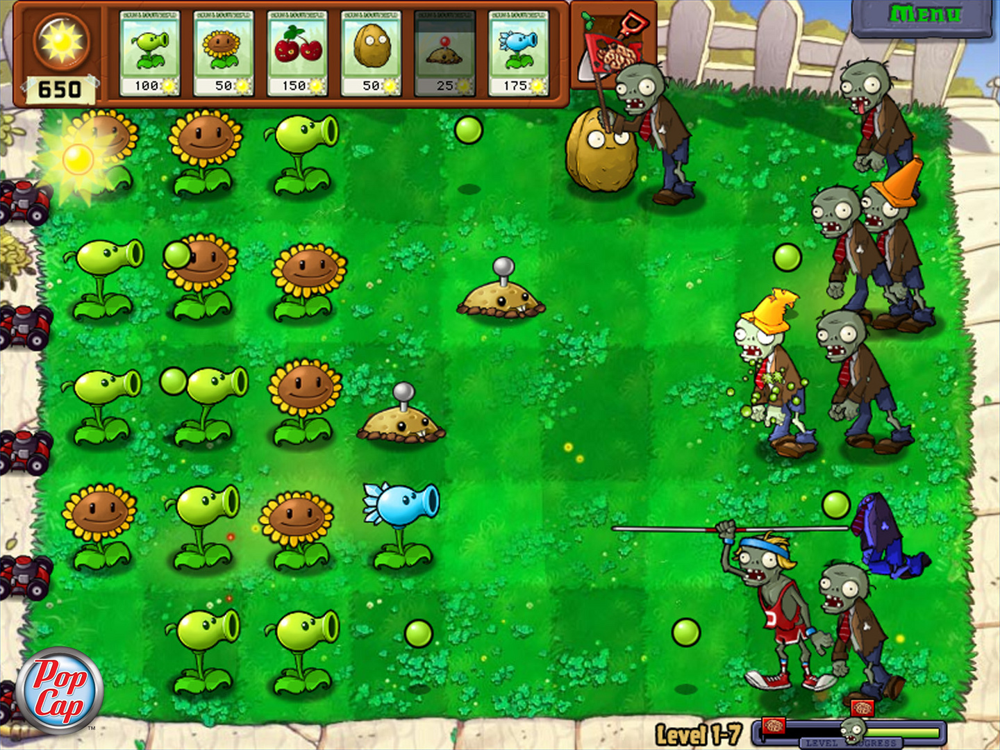
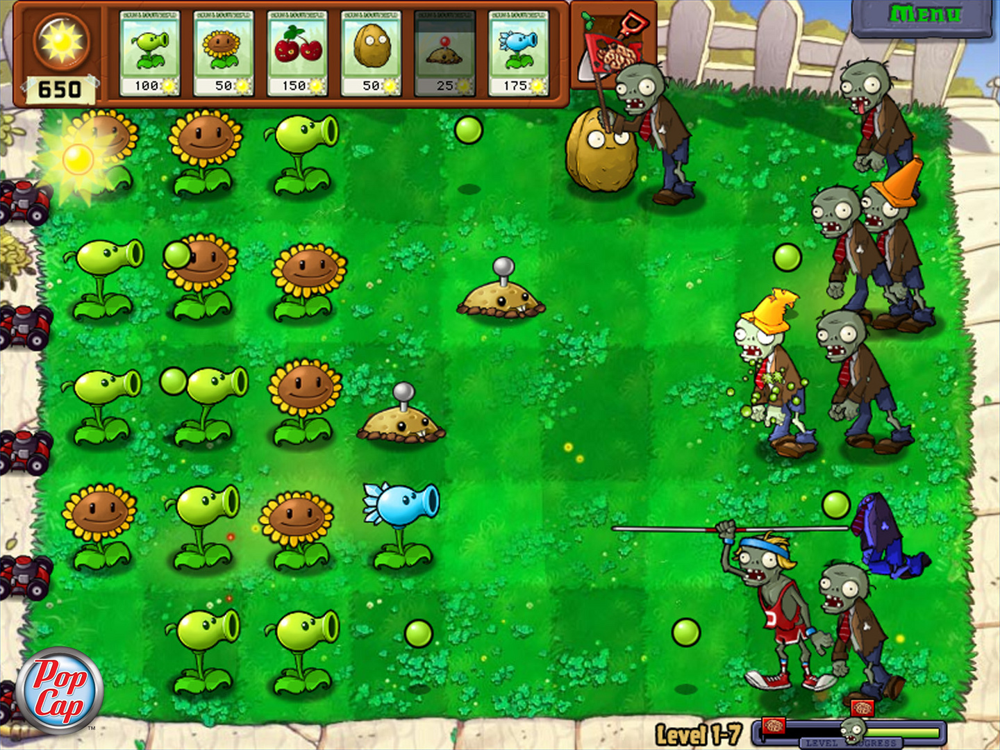

El objetivo del juego es similar a otros juegos del tipo defensa de torres. Los zombis aparecen mientras aparece un aviso que le indica al jugador de que la partida comenzará. El jugador va disponiendo diferentes plantas mutantes con distintas características de ataque o defensa en tres lugares diferentes de la casa (jardín delantero, jardín trasero/piscina y tejado) para detener a la horda de zombis que intenta devorar los cerebros de los residentes. Los zombis presentan diferentes atributos y habilidades, como cavar por debajo de las plantas o saltar por encima de estas con la ayuda de pértigas, llevar diferentes objetos como casco o conos, escaleras, globos. También otra de las habilidades que poseen ciertos tipos de zombi son invocar a cuatro zombis para realizar una coreografía inspirada en "Thriller" en la que aparece un zombi caracterizado como Michael Jackson. También hay un zombi yeti (zombi secreto), que se encuentra cuando se llega al nivel 4-10 por segunda vez.
CLIC AQUÍ PARA JUGAR! 
